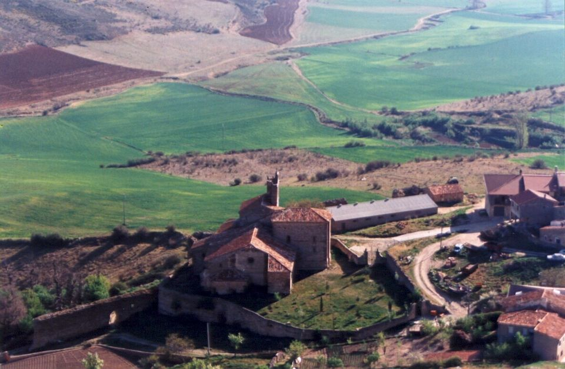

36. ff.70-71.
2.5.1646 (O) Aora los días que huviere cartas se deben estimar mas por la poca esperanza de que las aia, assi por las ocupaciones de VSI en la visita como por la distancia de los lugares. Con la que reciví oi de 24 de Abril desde Mandañona me alegre mucho, gracias a Dios que VSI va con salud. Del Príncipe n[uest]ro sr. han escrito que estava con tercianas y que los médicos decían que no eran de cuidado, avíanle sangrado una vez, y creían le sangrarían otra Dios le dé la salud que hemos menester. Atribuien el achaque a las madrugadas del camino y a la mudanza de temples. Ha se dicho que en estado bueno vendrá Su Alt[ez]a aquí, solo dudavan quien le avía de assistir. Anda mui esparcida que se vuelva el sr. Conde de Castrillo porque hace gran falta a los disposiciones, y dicen si con la enfermedad de Su Alt[ez]a se ha de apresurar el cassamiento de Su Magd. 1 Aunque ha parecido descuido el no escribir a VSI del niño Ihs no le he tenido en solicitarle, y cassi le tiene acabado en blanco Pereira y güeco todo que con ser de buen tamaño es poco lo que pessa. Estos días está ocupado en una imagen de prissa y me avía dado palabra tenerle acabado de estulto en quince días. Él dice que ha de ser mui bueno y lo parecido que está hecho. De los laminicas confiesso que qu[an]do volvió Juan la postrera vez se me olvidó que las llevara, oi pregunté si estava aquí el ord[inari]o y dixeron se avía ido aier. Remitiré con el primero que fuere de confianza, o quiça con la estafetilla de Aragón porque no ande VSI sin tal compañía. Parece que si el sr. D. Luis de Haro passó sin ver a VSI que será mui posible suceda lo mismo al sr. Duque del Infantado. Dicen que Canencia le detiene los despachos por una media annata antigua ojalá los pudiere dexar y venirse a su cassa. El sr. Duque de Medina escribió largo como está sin guesped y embió la carta inclussa para VSI y está mui agradecido de la possesión del Abbad y mui edificado de que VSI no quisiesse recibir un paje que le avía supplicado. Han dicho que el sr. D. Fer[nan]do de Andrade Arçobispo de Palermo es muerto. Murió el Obispo de Salamanca D. Juan Ortiz de Zárate, y Ber[nar]do González que en su género era de grandes noticias en aquél officio. Anda mui publico que el P. Fr. Thomás de los Trinitarios le dixo quince días antes que caiesse malo q[uan]do dispusiesse sus cossas. Murió tanbién el buen Luis Muñoz con la paz y opinión que vivía.
(T) Con don Fran[cis]co de la Tenta escriví el jueves q[ue] estubo aquí. Aora me remite ésta y dize puso la mía en Bujarlaro por donde avía de pasar la estafetilla y donde se puso la q[ue] aora vm me dize recibió escrita en Mandayona. Oy recibo Carta del sr. Don Ant[oni]o de Contreras en q[ue] me dize començó la enfermedad de Su A[lteza] por embaído y pasó a tercianas de que está sangrado dos veçes pero sin peligro. De la venida a Madrid no dize nada del Príncipe ni de Castrillo. Puede ser q[ue] sea assi. Mas hasta aora más parecen discursos que resolución. No hallo descuido en nada que sea hazerme mrd pues todos los cuidados más finos del mundo los tengo por sombra en comparación de el favor q[ue] recibo y la attención con q[ue] vm me le haze. Espero ha de salir el niño muy bueno. Ya dije a vm como el sr. Duque del Inf[anta]do pasó y me dexó un recado en Xadraque q[ue] reciví aquí donde me he detenido más de lo que pensé en la visita deste conv[ent]o de monjas. Y la q[ue] dizen es Mº del sr. don Juan de Austria acabó su offi[ci]o y se hizo elección en otra. Desseo salir de aquí dentro de dos días. La respuesta p[ar]a Su Exª holgaré que llegue a tiempo de la estafeta de Sevilla. Pesariame mucho q[ue] fuesse cierta la muerte del sr. Arçobispo don Fer[nan]do. A la vida y muerte de Luis Muñoz tengo arta imbidia.2 El Mrº Amores estaba estos días muy apreciado, no sé en q[ue] ha parado. Valfermoso 6 de mayo.
37. ff.72-73.
5.5.1646 (O) Bien se pagará lo ameno de Valfermoso con lo áspero y estéril de la sierra, donde se trabajará de todas maneras bastantemente. La familia que VSI lleva es mui apropósito y me he holgado mucho que el P. Fr. Antonio de Madrid esté y vaia en compañía de VSI que aunque me lo asseguravan en el Rosario dudava si era de assiento como VSI no avía hablado del, y me parece mui propria elección de VSI por lo bien que me pareció siempre. Al licenc[iad]o Vesga le importará mucho el tiempo que anduviere con VSI para si después gustare que visite solo. Su escum [escrúpulo] será a propósito en todas partes porque es capaz y hombre honrado y Don Bernardino lo es por su ministerio, y el buen Juan González andará como un cerço por essas sierras, con differente costa y carruaje avrán visitado los antecessores de VSI. N[uest]ro sr. se sirva de traer a VSI con la salud que deseo. De las tercianas del Príncipe n[uest]ro sr. hablan variamente en que se anteponen o posponen si son sencillas y temen no se hagan dobles, pero parece que conformen en que no han faltado asta aora y se dice mucho que en estando Su Alt[ez]a para ponerse en camino se vendrá aquí, y el sr. Conde de Castrillo a asistirle y de Su Exª dicen tanbién que se quedará en Navarra a la conclusión de las cortes y persistirá la voz de que se viene. La carta para el Maiordomo se hechó en la estafeta de Segovia. Don Fer[nan]do de Aiala me dio lo que va con ésta, han dicho hable a Don Luis de Yepes para el Juro, y diga el buen termino de sus officiales io le hablaré. Sebastián Vicente me dixo que ia avía persona que recibiesse aquel dinero que la hablaría para que acudiesse por ello. Quise saber de Juan de Aguirre si se le avía de entregar y respondió que sí. Esta tarde le fui a buscar y no le hallé en cassa para decirle que librasse diez y nueve o veinte mill Rs en Vellón luego porque para la plata escribiría a VSI lo q[ue] mandava se hiciesse por estar prevenido no la tocasse. En mi poder avrá poco más o menos de 19 V Rs de Vellón y dos mill y quinientos en plata sin la del Maiordomo que me dexo D. Bernardino, y once doblones que vinieron con los 4 V de vellón de Segovia satisfecho el Alcance que hice en las ultimas memorias que remití. La plata passa desde 33 a 34 conforme las ocasiones VSI se servirá de mandar responder como se ha de hacer de modo que puedo leer el capítulo a Juan de Aguirre para que vea que se procede con lisura. La messada de Sigüenza se podrá ajustar y la de Segovia ir la remitiendo con comodidad que harán todo lo que pudieren por servir a VSI. No embio las laminas con la estafetilla por no aventurarlas. De la armada, y del exército de Cataluña no se dice que obren siendo todo superior al enemigo no deben de poder mas. Dios nos dé buenos sucessos.
(T) Aviendo escrito a vm en otra y estando para partir ya con el váculo recibo ésta en que solo podré escrivir lo precisso, que es lo que toca a las mesadas. Con la dilación q[ue] esos ssres han causado se ha ido gastando el dinero en otras obligaciones forçosas como vm sabe. Podrase acomodar aora la de Sigüença dando la plata a como savré. = Y la mesada de Segovia se irá juntando lo más presto que se pueda. Y si los que los han de recibir quisieran en tiempos tan apretados hazer buen pasaje solo en recibir sin las delicadezas que nadie usa estubiera ya pagado, que para mí es gran descanso aunque nos apretamos. Si tubiere vm lugar se servirá escribir al May[ordo]mo a Seg[ovi]a avisándole si puede remitir en correspondencia segura para la mesada de aquél ob[is]pado. Para la una y la otra podrá vm usar de la plata del Mayordomo. La carta de Don Fer[nan]do de Ayala remito a vm y supp[lic]o a vm le ayude para concluir esos neg[oci]os dandole también lo que fuere necess[ari]o para sacar los privilegios. Aora es impossible responderle por la razón dicha otro día lo haré. Valfermoso 9 de Mayo 646.
38. ff.74-75.
9.5.1646 (O) Todas las estafetas escribiré aunque no aia carta de VSI para que lleguen q[uan]do aia ocasión de remitirlas. Oi no la hallaron en la lista pero alentome una carta del secret[ari]o en que dice que VSI va con buena salud. El sábado avise a VSI como ia tratavan de la cobranza de la mesada y lo que me avían dicho Sebastián Vicente y Juan de Aguirre aier llevó el cajero trece mill doscientos y setenta Rs que ajustó unas partidas que venían con él los que las avían de llevar, y le dixe que asta 18, o 19 mill Rs de Vellón podría librar luego sobre lo que tenía recibido. Esta tarde vino el Thesorero de la capilla creiendo que hallaría en mi poder los tres mill ds de las dos mesadas, dixele lo que passava y que el sábado avía escrito a VSI y que por andar en la visita tendría alguna dilación la respuesta pero sería poca. Hablé con el cajero de la plata y ia la toma va a 34 aora darán mucha prisa si bien Juan de Aguirre dará tiempo. Las tercianas de Su Alt[ez]a continúan y dicen se anteponen y está sangrado quatro veces. Una carta del sr. D. Luis de Haro dice que aunque los médicos asseguran que no es cossa de cuidado, Su Magd y todos le tienen asta verle bueno, y se dice mucho que si mejora vendrá aquí. Asseguran que si no huviera por la enfermedad de Su Alt[ez]a Su Magd estuviera ia en Zaragoza, y que el sr. D. Luis partía luego allá porque escriben los cabos que no tienen los disposiciones necessarios. Censuran acá que no salgan a campaña y dan por razón que no ai forraje para la cavallería. La armada del enemigo dicen está en Tolón, y la de Su Magd con buena gana de pelear. Han venido cartas de primeros de Abril de Roma escriben que el Rei de Francia pide tres cossas al Pontífice, que restituía a los Barberinos en el estado que estava antes que empezasse a proceder contra ellos. Que admita el embajador de Portugal y que ciertos pretensiones desta guerra de Ferrara las satisfaga con lo qual no se ajustarán. También dicen que el sr. Almirante de Castilla avía tenido un enquentro con el Car[dena]l Deste por no firmar los coches, como se ha declarado por Francia. El sr. Duque de Medina escribe q[ue] no avía recibido el pliego aquel ord[inari]o de que estava mui desabrido el Agente dice era grandíssimo no parece que se puede perder. Esta campana de Velilla nos tiene quebrado las cabezas más que tocará a los oídos de cada una que no hablan de otra cossa. Quiera Dios que sea una vez para servicio n[uest]ro. Unas visitas se han estado asta mui tarde y han hecho escribir con mucha prissa. Supp[li]co a VSI se sirva de perdonarla.
(T) Todas las cartas he recibido que son el mayor alivio de n[uest]ra peregrinación. Ésta reciví en Carrascosa ayer, una legua de Cogolludo y poco antes avía recibido la de el Duque y en ella un capit[ul]o en q[ue] me aprieta llegasse a Cogolludo pues me avía de hallar cerca y assí lo he hecho aunq[ue] desacomode algo la vereda especliam[en]te en la aspereza del camino. Llegué anoche al Palacio de Su Exª de donde escribo ésta. En lo de las mesadas escriví a vm. la semana pasada q[ue] se acomodasse la de Sigüença y en ella la plata a como corriere. Y aora añado q[ue] la plata q[ue] restare aunq[ue] sea la q[ue] dizen ser del May[ordo]mo se puede dar a quenta de la mesada de Segovia y sirvase vm de avisar lo que falta para q[ue] lo acomodemos como pudiéramos. Que yo sr. deseo pagar aunq[ue] no comamos y certifico a vm. q[ue] ay tanta pobreza que remediar en este ob[is]pado y se juntan tantas pagas y no nos valemos de los frutos de Segovia por que todo se distribuye en aquel ob[is]pado que nos hallamos artos apretados. Mas fío en n[uest]ro sr. q[ue] nos ha de ayudar. Con mucho cuidado nos tiene la enfermedad del Príncipe n[uest]ro sr. Su buelta a M[adri]d no tendrá más fundamento q[ue] el discurso de que aviéndole probado las climas se buelba al natural. Y es discurso verisímil. Mucho se ha atrasado la campaña con este rodeo de Su Magd. y a mí nunca me pareció apropósito por conocer la tierra y por otras razones. Y hallé de mi parecer en Atiença alg[un]os de los q[ue] iban con Su Magd. Mucho pedir es y mui dificultoso todo. De la Madre Ana reciví ayer carta dize se viene con la srª Duq[ues]a muger del Almirante q[ue] parece abran ya partido de Roma. Desde su casa escribo a Su Exª. Y mañana procuraré salir de aquí y ir a Membrillero donde se buelbe a atar el hilo de la visita y de allí por Xadraque y sierra de Atiença. En el pliego último q[ue] escriví a vm iba carta p[ar]a Su Exª de importancia. No avía oído esto de la campana poco necessitamos de su sonido, qu[an]do Dios no habla tan claramente por instrumentos más ciertos. Cog[ollud]o 14 de Mayo. Supp[li]co a vm imbie esa al Pe Confessor con el parte a donde estubiere a buen recado que importa. Q[ue] yo no sé si abrán salido de Navarra.
39. ff.76-77.
12.5.1646 (O) Dos cartas, debajo de una cubierta de VSI he recibido oi escritas desde Valfermosso a 6 y 9 deste, con que se desquitó la perdida del miércoles. Gracias a Dios que VSI va con buena salud, aier y oi ha llovido por acá, y aora está lloviendo mui bien, y ia decían q[ue] lo sentía el campo, y se reparará con esto. En el parte de anoche dicen que avisan que el Príncipe n[uest]ro sr. quedava sangrado quarta vez, y que la terciana se pospuso algo, pero vino a las nueve de la mañana y duró asta las nueve de la noche con menos intensión la calentura. En primavera no tienen por peligrossas las tercianas, lo que desean es poderle mudar de terreple, q[ue] el de Pamplona no le tienen por bueno. Oi decían en Palacio que en estando Su Alt[ez]a para ello Su Magd llegaría a Zaragoza y luego se vendrían aquí, y avisan en las cartas de oi que el sr. d. Luis de Haro partió a 9 en coches de paradas a disponer las cossas del exército y ajustar las del Reino que dicen no están de mui buena calidad, y volverse dentro de cinco días. Ya empiezan a hablar de la gente que tiene el enemigo en Monblanco, y si la armada ha salido de la buelta de Italia, y la esperan el Príncipe Thomás en la parte donde ha de desembarcar con dos mill cavallos y seis mil infantes, tienen por cierto que la de Su Magd la irá siguiendo. La carta de VSI para el sr. Duque de Medina irá el martes, y oi he escrito al Maiordomo sobre la mesada como VSI manda. Porque se dan buena prissa y ia tienen recedidos diez y ocho mill Rs y con el orden de VSI de dar la plata a como passare tomaré de la que ai la que baste para cumplir la messada de Sigüenza que es poco más de 23 V Rs y la plata procuraré la tomen a 34 y ellos no la quisieron recibir a 32 qu[an]do se les dava. A Don Fer[nan]do de Aiala dixe oi que viniesse para el despacho por el dinero que huviesse menester, y conferimos el modo que sería mejor de hablar a D. Luis de Iepes para no exasperar la materia. Pedro María me embió que viese la carta que VSI le escribió y aunque el criado no supo decir si avía recibido las bulas parece venía todo junto. Aier estuvo aquí el Obispode la nueva Guadalajara que dixo partía oi para Sevilla. Dicen ha venido un decreto de Su Magd para que D. Christóval de Gaviría dexe la plaza de Teniente de la guarda española y se dé a D. Rodrigo de Tapia. El decreto alaban mucho y que empieza por quanto los vecinos se gobiernan castigando los delitos y premiando los servicios Xa sospechan que es por la multitud de officios que ha vendido con que se eximen de la justicia y viven y venden como quieren, arto hablan de otros que han delinquido en lo mismo. Con el sr. Obispo de Lugo estuve aier, hallale en la catre porq[ue] al bajar del Puerto le dio un religiosso un golpe que le desolló una pierna querían le sangrar y han lo reusado ia. Sabrá VSI como salió el P. Fr. Tomás de Bustamente por provincial y todo lo demás del cap[ítul]o los officiales del sr. secretario Ant[oni]o de Alossa me hablaron en la paga de cien ds de pensión que tiene D. Ricardo maestro y capellán de sus hijos. Yo les dixe que no era necessario favor para que VSI pagasse, que remita los despachos y le pagarán
(T) Después de aver escrito recibo ésta en Cogolludo a donde ha llegado con la forma que vm verá en esotra. Hasta que aya noticia de la salud de Su A. nos tiene con mucha pena y cuidado. Aora va otra p[ar]a Su E. Bien hizo vm en dilatarlo para que cobren a desseo. Y yo le tengo tan grande de pagar y me remito a la clausula que va en es otra carta. Debajo de una cubierta iba carta y pergamino. Una de las cartas era suya. Pesame del achaque del sr. Ob[is]po. La otra carta era del pe Provincial. Vm le respondió mui bien. Y assí se executará acudiendo a la Contaduría con legitimo derecho y despachos. Y no hallará dilación en el de acá. Cog[ollu]do 14 de Mayo de 646.

40. ff.78-79.
16.5.1646 (O) En la estafeta de oi no hallaron carta de VSI y como estoi enseñado a recibir mrd con tanta continuación, es mui grande la soledad que me causa el correo que faltan. Aora bien veo que las ocupaciones de la visita y la distancia de los lugares lo ocasionan. Oi han dicho que el Príncipe n[uest]ro sr. está mejor de las tercianas, aunque no han faltado, y asseguran que no son de peligro. En esta conformidad hablan en la ida de Su Magd a Zaragoza por poco tiempo y en cumpliendo con los de Aragón y estando Su Alt[ez]a para ponerse en camino venirse aquí, y convertir lo que se avía de gastar allá en las pagas del exército. Corrió voz que el del enemigo se avía puesto entre Lérida y Fraga 9V infantes y 2V500 cavallos. Aora dicen que se acercó a Lérida y luego se retiró, y que el sr. Marqués de Leganés emperezava el salir de Zaragoza porque no le cumplían la gente que le ofrecieron. Con la ida del sr. D. Luis, y si fuesse Su Magd se ajustará lo que falta. Por la parte de Galicia dicen ha tenido un buen sucesso el sr. Marqués de Aitona. Y otro el de Molinghen por lado Badajoz, si es cierto el último, mañana lo sabré por carta del Jeneral. Dos veces he buscado al secr[etari]o Juan de Aguirre para ajustar la messada de Sigüenza, digo los recaudos que ha de entregar procurará que dé conclusso antes de pasqua. A Tordelaguna se ha ido oi el Conde de Monterrei. Discurren en que quien le hechó de los puestos que tenía le detendrá desviado todo el tiempo que pudiere. Aier recibí cartas del sr. Duque de Medina ia remití la de VSI y Su Exª no dice cossa particular embió me una cifra para que la guardasse por si se offreciesse ocasión de ussar de ella. La qual no usaré jamás porque siempre se presume, si llega a saberse, mucho más de lo que se dice, y son infinitos los inconvenientes que han causado estas cifras particulares, y solas son buenas para fuera del Reino y en servicio de Su Magd.3
(T) En la siguiente recibirá vm dos que escriví de Cogolludo de donde salí el martes. Estube aquella noche y miércoles en Membrillero visitando. Y vine a Xadraque que por ser mayor lugar del sr. Duque del Infantado, ha sido necess[ari]o gastar quatro días. De donde salimos 2º día de Pascua a Mujalaro. Aquí se ha dicho que han faltado las tercianas a Su A. Puesto Su Magd en Zaragoza no sabemos si se podrá desembaraçar tan presto. Acá se avía dicho que estaba detenido y siempre me ha hecho difficultad aviendo salido de M[adri]d favoreçido de Su Magd siempre tengo temor de la gente n[uest]ra sino se muda el modo de levantarla y conservarla. Mucho se ha hablado en este punto con los mynistros y aún con su Magd. En las cartas que recibirá vm el sábado he suplicado a vm que se dé a las mesadas todo lo que ubiesse sobrado de plata. De Cogolludo escriví a Su E. Mui bien me parece lo que vm discurre de la cifra. Ni sé para q[ue] Su E necessite el uso de ella con vm ni con nadie de M[adri]d y absolutamente para nada es apropósito sino para lo que vm dize. Jadraque 21 de Mayo de 1646.
41. ff. 80-81.
19.5.1646 (O) Los sábados deben de ser mejores días para las cartas pues el pasado y éste han venido dos juntas. Reciví las que VSI me hizo mrd de escribir desde Cogolludo y es cierto que le causaría a VSI soledad ver el Palacio sin sus dueños, y haría mem[ori]a de mucho de lo que passó allí. La carta para el sr. Duque de Medina que estava acá fue el martes, y la de aora irá el que viene. La del P. Confessor va en el parte desta noche con dos renglones que escribí a su R[everndísi]ma y el official maior quedó encargado de que fuese con seguridad. Asta ora no ha salido su Magd de Pamplona y desea arto que su Alt[ez]a esté para mudarle a Estella o a Tudela. Las tercianas duran aunque escriben son menores y se limpia después. Buena señal parece que traten de fiestas en Navarra, y acá de que aia toros el jueves, con que se disputa largamente si son menos perjudicales que las comedias.4 Ya he dicho en cassa de Sebastián Vicente que se cumplirá la mesada de Sigüenza, y se dará parte de la de Segovia y aier y oi han librado cerca de quatro mil Reales, oi he tenido mucho que hacer y solo hice el resumen a prissa de la plata y del Vellón que ai en mi poder para estas pagas. De los 3V600 Rs de plata quitado el Alcance quedaron 2V591 Rs de la plata del Maiordomo 6V170 Rs que hacen los dos partidos de plata ocho mill setecientos y sesenta y un Reales estos han empezado a passar a 34 el precio que no es el más bajo. Y los once doblones el premio de la plata a este precio hace 2V978 Rs que hará todo en Vellón 11V739Rs y en Vellón tenía 19V223 Rs que los dos partidos de plata con el premio y el Vellón vendrán a hacer treinta mill novocientos y sesenta y dos Rs. La messada de Sigüenza monta 23V480Rs y 17mrd y la de Segovia 11V110Rs que los dos hacen 34V590Rs que viene a ser poco lo que falta y bien conocen todos la condición y puntualidad de VSI. Oi escribí con el ord[inari]o y lleva en la carta las laminicas, y avisso a D. Fran[cis]co de la Tenta que los cobre y las remita luego a VSI con persona segura. Oi miraron la lista de Segovia y no hallaron carta del Maiordomo.
(T) De Sig[üenz]a me imbían convidado las cartas de acá van como se ofrece poder escribir y remitirlas. En esta carta [para el Pe Confesor] iban p[ar]a Su Magd algunos apuntamientos tocantes a las materias de Aragón y Catalunia y a la Regla del Príncipe n[uest]ro sr. que me hizo reparar el ver el modo de caminar para su edad y delicadeza tan inconsuelo a su ordin[ari]o exercicio. = No me pareció muy benigno aquel temperamento de Pamplona.5 Nunca vimos que las Comedias escusassen los toros. Bien temo que ellas se han de volber. El fautor de n[uest]o daño de todo se vale y no duerme. Las laminicas me han remitido oy con ésta y vienen bien acomodadas y a buen tiempo porq[ue] començaremos presto tierra tan corta [léase pobre] q[ue] apenas las hallaremos en la Iglesia. Ésta no será mucha. Lo q[ue] falta de las mesadas se remitirá de acá si no lo imbiare el May[ordo]mo de Seg[ovi]a donde no le falta q[ue] cumplir por las limosnas q[ue] allí se han señalado. No puedo alargarme más porque ay una larga legua6 de aquí a Negredo donde hemos de ir esta noche y es tarde. Cendejas de la Torre. 24 de Mayo. Si se offreciere hablar con alguno de los Pensionarios sirvase vm advertirles que acudan a don Franc[isc]co [en] Sig[üenz]a q[ue] desseo no se haga pella y hasta aora no ha acudido ninguno. Y aora podría acudir el Agente de los ssres Capuas si ha de cobrar alguna de aquellas pensiones que la una está encargada a Martín Pacheco[:] el de Sig[üenz]a. Con ocasión de lo q[ue] trató este ibierno con vm se le podría dar aviso sin q[ue] entienda q[ue] sale de acá. Y lo menos a Pº Mª y los demás trayendo legítimos despachos de vida Xa.
42. ff.82-83
23.5.1646 (O) Las estafetas de los miércoles no deben de traer el paraje que las de Aragón, pues dos veces han faltado cartas en las primeras y venido duplicadas en las segundas. Oi no hallaron carta de VSI y aier recibí la del sr. Duque de Medina que va aquí y essa del Maiordomo en respuesta de la que le escribí. Esta noche le he escrito lo que falta para cumplir las messadas, gastando toda la plata que avía en mi poder, para que no tenga tanto cuidado. Bueno está ia el Príncipe n[uest]ro sr. que escriben le avían faltado las tercianas, que ha sido gran misericordia de Dios. Su Magestad con esto abreviará la ida a Zaragoza, solo dudan si ha de querer estar allí el día del corpus. A Juan de Aguirre he buscado y oi dixeron que no acudía a la secret[arí]a por estar malo, llegaré a su cassa. Ya hablé a Don Luis de Iepes y pusse con él a Don Fer[nan]do de Aiala offreció por servir a VSI y hacerme mrd. Hace todo lo que pudiesse. Dice Pereira que ha acabado con algunas cosillas que le embarazan, que aora no dejará la mano de lo poco que falta al niño sin acabarlo. Del exército del enemigo dicen que le ha dividido en trozos y ocupado algunos puestos en differentes partes. Otros que son para el sitio de Lérida y como suponen que está con tres mill infantes 600 caballos, víveres y municiones por un año. Discurren que era lo mejor que nos podía estar. Su Magd dicen tiene buena cavallería y la hacen de quatro mill, la infantería poca pero buena, y que se hacen grandes diligencias para juntar más. El no estar concluidos los bastimentos es la maior falta que dicen tiene el exército y se alargan a que se avía registrado el carruaje que avía llevado Su Magd para poner el trigo que se pudiesse en él. Aier me dixeron que el Jeneral Jaison que es uno de los tres que entra en Flandes con exército vino a Paris por la posta en día y medio, habló a la Reina y ministros, y se volvió con la misma prissa desta venida resultó publicar la Jornada del Rei y de la Reina para Flandes y mandar que para primero de Maio estuviessen las guardas prevenidas que dicen se componen de quatro mill esquizaros y dos mill franceses y la nobleza también. Discurren que esta resolución tan grande y tan repentina nace de caussa nueva y no pequeña. Piensan si como los tres exércitos son tan poderossos, y si el de Oranje entra con el de Olanda añadiendo esta fuerza para acabar en una campaña lo que pudieran en muchas. Tanbién que Olanda conoce quan mal vecino ha de ser el francés y se dice con particularidad el ajustamiento de las treguas y aunandose las fuerzas de España y Olanda tendría necesidad Francia de todo lo que hace para defenderse. Pero más se inclinan que la ida es a algún trato, a impedir las treguas, punto viene a ser en que no solo va la conserva de los estados de Flandes sino de gran parte de lo restante de la Monarchía Dios lo disponga como conviene.
(T) Las de vm. me llegan con puntualidad que es lo que me importa. Y más aora que començamos lo áspero de la sierra. Si bien divertiremos algo por estar el día del ssmo Corpus en Atienza donde visitaré y tomaremos otro girón más dentro de los montes para pasar los por el Rey de la Magd y caer a lo de Aillón que es llano aunq[ue] distante. Y de buelta se acabará lo que resta de este lado, y si lo concluimos con el favor de Dios, abremos depuesto por aora con buen cuidado. Para lo que falta he dicho a don Franc[isc]o de la Tenta que la remita a vm. cinco mill Rs. Y assí se podrá relevar de eso el May[ordo]mo que lo q[ue] dize en su carta es assí como lo dize. Y no hará poco en satisfacer con lo q[ue] allí se debe. Mui buena nueva es esta gracias a Dios. [Príncipe] Estimo el favor q[ue] vm me ha hecho como debo. Creo nos dará buena quenta del niño Pereira. Y desseo mucho que le avierte. Mucho tardan los nuestros en salir. Y todo el año hemos estado al mando de los bastim[ien]tos y aún aguardado con el pan hasta cerca de quaresma para ayudar a socorrer y no se habló una palabra, ni se sacó grano para el exército de todo este ob[is]pado estando tan cerca. Por donde todos juzgaban que avía gran prevención por otras partes. Una gazeta me han imbiado de Roma que ya abrá llegado ay de mejor letra con todo eso la remito a vm por si gustare de leerla y no se cansare con la letrilla. Todo parece que anda alterado. Dios dé quietud a su Iglesia como conviene a su mayor servicio. Congostrina, 28 de Mayo.
43. ff.84-85
26.5.1646 (O) De 21 desde Jadraque es la carta de VSI que he recibido oi, que qualquiera que llega sirve de doblado gusto, por la incertidumbre de si la avrá. Gracias a Dios que VSI va con buena salud, el Príncipe n[uest]ro sr. escriben está bueno, y que su Magestad salía el lunes para Zaragoza, donde está el sr. D. Luis de Haro disponiendo lo que falta para la campaña, que dicen no es poco. Oi referían una carta de Su Exª de 21 en que avisa q[ue] el enemigo estava sobre Lérida con nueve mill infantes y tres mill cavallos, y esperava otros dos mill, y siete mill infantes que los sabían por avisos ciertos, que es grande exército para el que escriben de Fraga que tiene Su Magd los 300 hombres que están en Garden dixeron oi que se defendían mui bien y avían muerto a la segunda persona después de Arcur, dos mariscales, muchos cabos y asta 400 franceses pero ia dicen ha hecho un fuerte en lo bajo y una placa forima desde donde le bate. En Lérida suponen que ai quatro mill hombres y provisión para municiones quiera Dios sea así. De la ida de la Reina y el Rei de Francia a Flandes dan diferentes causas, las mas o todas deben de ser discursos. Han querido decir que avía trato en Cambrai, y se descubrió y mataron al que gobernava allí con que se frustró el intento. La armada del enemigo dice que sale y la espera el Príncipe Thomás con seis mill hombres que ha passado por el Jinovessado. Estos días se ha dicho que los Genízaros mataron al Turco en que, si fuesse cierto, se conocía claro que obrava la mano de Dios. Aora vienen órdenes para la compra de Juros que obliga Su Magd que tomen, repartiendo conforme las minutas a diez en plata sobre la renta del dos por ciento. Su Magd pierde mucho, los compradores tanbién y solo ganan, los que compran de los compradores que venden de valde. Oi han venido por dos mill y docientos Rs estará ia mui poco más o menos la messada de Sigüenza, y la huviera ajustado y cobrado la escriviera si el secret[ari]o Juan de Aguirre estuviera para negociar, ia dicen que está mejor. Esse memorial me dio el ajente maior del sr. Duque de Medina y encareció mucho la necesidad de quien ha de aver el dinero. El miércoles remití carta de su Exª a VSI.
(T) Por tener el día del Corpus ssmo en buen lugar se ha trabajado estos días algo mas. Y entramos la vísp[er]a de la fiesta con grande tempestad de piedra grande y violentíssima que nos cogió en un monte raso sin tener un árbol, donde nos arrimar y tanto padecían los de a caballo como los de a pie, aunq[ue] fue Dios servido aplacar presto el rigor de la piedra. Fue mucha la que cayó por la gran violencia con q[ue] venía q[ue] aún antes de llegar parecía que sonaban en el aire tropas de carros. Siguiose terrible agua que nos duró casi una legua hasta entrar en Atienza, y con todo eso hallamos al Cabildo de la Clerecía y al Ayuntamiento a la puerta de la villa y con la furia del agua fuimos a la Igl[esi]a y se rezó el Rossario. Reparamos con ropa enjuta q[ue] no fue poco no se aver calado los cofres de la Acémila. Hizose memoria q[ue] aora dos años entramos en el mismo día en Riaza con la misma agua y duró dos leguas. La piedra ha hecho algún daño, pero más provecho el agua. Reciví luego ésta con q[ue] se olbidó todo el infortunio. El de Lérida temo mucho. Y qu[an]do mas bien hemos de gastar a toda esta campaña en mudar y cuidar desta plaza que es cosa este tanta costa para tan cortos effectos. De n[uestr]as prevenciones dudo mucho. Y en todo estamos muy caídos si dios no lo remedia como puede y espero en su divina Magd. Marabillosa cosa es los aceros que tienen en Francia para tantas cosas con un rey niño y una Reyna her[ma]na de el de España. Por acá han llegado también ya yo avía discurrido en la perdida que vm dize. [Juros] La estafeta pasada escriví a vm y al May[do]mo que lo que falta de las mesadas se remitirá de acá, porque el May[ordo]mo cumpla con las pagas de Segovia. A la p[ar]te de este mem[ori]al me acuerdo respondí luego que murió el contenido q[ue] acudiessen por su paga. Esto ha muchos días estando yo en Segovia ya estubiera pagada esta deuda pero ni acudieron, ni me respondieron. Aora digo lo mismo q[ue] se acuda a Seg[ovi]a al Mayordomo con el ajustamiento o resta justificada con restim[ient]o del día de la muerte y poder para dar finyquito, que luego dará el May[ordo]mo lo q[ue] constare deberse. Ya reciví esta carta de Su E no puedo oy responder que está de prissa el que lleba ésta a Sig[üenz]a. Atienza 1 de junio.
44. ff.86-87
30.5.1646 (O) Como los demás miércoles no avía tenido carta de VSI la de oi fue mucho más bien recibida y se hecha de ver el cuidado q[ue] VSI tiene de hacerme mrd en las pocas que han faltado, y el que tienen en Sigüenza en remitir las respuestas. Aora con alexarse VSI mas, será menos cierta la correspondencia. Del Padre Confessor ha dos días que recibí una carta mui favorecida y en ella me manda remita a VSI la inclussa con toda seguridad. Dice como el lunes partía su Magd para Zaragoza y llevava consigo al Príncipe n[uest]ro sr. Mui propria sería de VSI la advertencia de la regla de su alteza y bien necessaria porque dicen era menester que se fuesse algo a la mano en tantas comidas de carne tan a menudo y tanbién en las cantidades con que se ahoga el calor natural y se engendran cruedezas: a esto se añadió la agitación del camino sin aver hecho la digestión, Y acá lo dixeron luego. De Aragón y Cataluña bien avría que decir. Oi se dixo en el Patio que el sr. Marqués de Leganés aún no avía salido de Zaragoza, ni saldría asta que su Magd llegase y que el sr. Duque del Infantado se fue a Fraga aviendo tenido algún enfado con Su Exª 7 para no salir de allí estando en el enemigo en campaña. Don Pedro González me dixo que escribía Su Exª que le avían entregado la cavallería, que era tres mill cavallos, y otros mill por montar por falta de gente, la infantería la hace mui poca. Essa copia del capítulo me dieron oi y anda mui esparcido. Si fuesse cierto lo que contiene saldríamos de gran cuidado, pero muchos lo dudan. La messada de Sigüenza está toda entregada y solo falta q[ue] Sebastián Vicente dé recibo recogiendo las libranzas de su cajero que ha dado en mi poder para que Juan de Aguirre entregue la escritura con razón de como está pagada. Oi estuve en su cassa y ia se empieza a levantar y me dixo la daría luego con el recibo de Sebastián Vicente para hacerle cargo. Tanbién hablé oi a D. Fer[nan]do de Aiala y dixo que se avía lucido el aver hablado a D. Luis de Iepes porque luego le despachó. Preguntava que sería bien dar a los officiales dixe que nada, replicó que no se podía escussar, dixele que fuesse lo menos que pudiesse pues no lo merecían. A Martín Pacheco hablé en la pensión que está a su cargo y respondió que vería los papeles, y se dispondría la satisfación en las pensiones haré la diligencia como VSI manda pocos ai que den oi prissa para pagar. He mi holgado que llegassen las laminicas a tan buen tiempo y qual debe de ser la tierra según lo que VSI dice de las Iglesias. Aier huvo toros dicen fue buena la fiesta y sin desgracias y que en los balcones hecharon cierto repartimiento para los hospitales en lugar de las comedias fuertes valedores tienen para que vuelvan, y aora como no ai autos se valen de la soledad que causan en fiesta tan grande. VSI vea muchos días como el de mañana con la salud que deseo. Soledad le causará a VSI el no hallarse en la Iglesia pero en todas partes logrará VSI el día, pues en todas es el mismo señor.
(T) El alivio de la visita es recivir las de vm y responder aunque las ocupaciones, y descomodidad de lugares no me dexa gozar de él tan de espacio como yo quisiera. Don Fran[cis]co de la Tenta llegó aquí el sábado en la noche y me traxó ésta con el pliego que venía de la mesma letra y el de el Pe Confessor a que responderé derecho a Zaragoza. Y aquí creo concluiré la visita en toda esta semana. Sobre este artículo me responden con agradeci[mien]to y en las demás advertencias. Yo las hago con buena intención y deseo acertar en ellas. [Príncipe] Dios nos saque bien deste verano. El Duque [del Infantado] hizo como quien es, supuesto que se ha encargado de armas. Mucho importará a la Christiandad q[ue] esto fuera verdad. Más muy razonable es la duda. Ninguna cosa del govierno oy[g]o con tanto gusto como la de pagar, aunq[ue] le templa el trabajo que a vm cuesta. No se ha hallado letra para remitir lo que resta de ambas mesadas. Presto creo se hallará cómo remitirlo y quiça para más quantía para la pensión de Aguirre y lo demás que se ofreciere. Deseo q[ue] se cumpla y que no ande nada sobrado porq[ue] no lo halle la muerte por ajustar. En todo me hallo obligado a los favores de vm. Y con ellos se dará fin a este negocio tan largo. También será necess[ari]o prevenir que será bien dar a don Fer[nan]do de Ayala por su cuidado qu[an]do se acabe de concluir. Pienso que tiene Don Franc[isc]o ajustada ésta y otras pensiones con Martín Pacheco y si no lo está es fácil acá aviéndolo de aver él. No ha faltado quien hable en q[ue] se hagan las pagas en M[adri]d y q[ue] de pagará conducción y q[ue] assí se solía hazer y tener en eso intereses; yo no he querido oyr esta platica. Antes me pesa q[ue] corra por arcaduces q[ue] les cueste algo, pues de nuestra parte pagan mis mynistros con tanta justificación y pureza. Ese pliego de Camerino es sobre una pensión de un Don Gabriel de Sanabria q[ue] tenía en Seg[ovi]a de 200 Rs y dize no ha cobrado nada. Mire vm que sosiego en tantos años aver dexado hazer una pella tan grande, que para mi govierno es pagar la dos veces porque juzgando q[ue] los que no han acudido no tenían derecho se ha distribuido aquella hacienda, con que se avían de pagar estas decursas 8, en obras pías. Ya les respondo que será necess[ari]o hazer el ajustam[ien]to de la quantia y justificación de despachos ante el ldo San Andrés que tiene la razón de aquel ob[is]pado, que acá ni ay libros ni noticia de él. Y también ver si ha quedado allí con que pagar y si no abrase de pagar de aquí. Si ubiera tan fuertes soldados y tan zelosos del servi[ci]o del Rey no estubieran estos Reynos en tan paretada fortuna. Este Stº día tubimos en esta villa y se hizo bien la processión, yo llevé el santíssimo en las manos y el Domingo q[ue] fue ayer prediqué. Y se propuso el edicto de visita. Ay mui sumptuosas parochias y mucha y buen clerecía. El sr. Duque de Medina me ha dado aviso de aquel neg[oci]o y le respondo. Y mucho antes lo avía sabido por otras partes porq[ue] la interesada me ha imbiado diversos recados y entre ellos a un predicador del Rey que me alcançó en Valfermoso, y le despaché con muy pocas razones. La materia es bien pesada. Y los eclipsis de mozos traen muy largos y malos efectos. A mí me tiene éste con arto cuidado.9 Atienza 4 de junio.
1 . The death of the Queen did not produce any urgency for Philip IV to remarry. The death of Baltasar Carlos in October made it imperative.
2 . Here we can see a reference to the seventeenth-century pre-occupation with dieing well. Friar Pedro does not envy him dieing but the manner of his death.
3 . This is a particularly sharp criticism of Medinaceli by Oviedo.
4 . The comedies incited sin. Bull fighting, as another leisure activity, did likewise.
5 . The air was a commonly known cause of disease.
6 . Here we can see the flexibility of measures in the seventeenth century.
7 . This seems fairly typical behaviour of Infantado who must have been particularly short tempered.
8 . Income derived from the censos.
9 . This is the beginning of an affair which was not to be resolved until 1648. It involved one of the ladies in waiting doña Antonia de Mendoza. See my article “Los usos políticos de la reputación...” op cit.